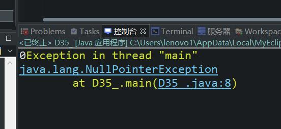

原文出处:本文由博客园博主心悦君兮君不知-睿提供。
原文连接:https://www.cnblogs.com/ruigege0000/p/11595363.html
原文连接:https://www.cnblogs.com/ruigege0000/p/11595363.html
一、总结
1.栈内存中主要存储的是方法体中的局部变量
2.对象内部有实例变量，实例变量存储在堆内存中
3.变量分类：局部变量（方法体中声明）；成员变量（方法体外声明）
实例变量（前边修饰符没有static）静态变量（前边的修饰符中有static）
4.静态变量存储在方法区内存中。
5.三块内存中变化量最频繁的栈内存，垃圾回收期主要针对的是堆内存
6.垃圾回收器（自动回收机制、GC机制）什么时候会考虑将某个java对象的内存回收呢？
（1）当堆内存中java对象成为垃圾数据的时候，会被垃圾回收器回收
（2）什么时候堆内存中的java对象会变成垃圾呢？
i.没有更多的引用指向它的时候；ii.这个对象无法被访问，因为访问对象只能通过引用的方式进行访问。
二、空指针异常
1.以下程序是可以编译通过的，因为它符合语法，但是运行时会出现空指针异常:java.lang.NullPointerException。空引用访问“实例”相关的数据一定会出现空指针异常
Student s = new Student();
System.out.println(s.age);
s = null;
//以上程序是可以编译通过的，因为它符合语法，但是运行时会出现空指针异常:java.lang.NullPointerException
//空引用访问“实例”相关的数据一定会出现空指针异常
System.out.println(s.age);
三、源码：
D35_void_pointer_exception.java
地址：
https://github.com/ruigege66/Java/blob/master/D35_void_pointer_exception.java
2.CSDN：https://blog.csdn.net/weixin_44630050（心悦君兮君不知-睿）
3.博客园：https://www.cnblogs.com/ruigege0000/
4.欢迎关注微信公众号：傅里叶变换，个人公众号，仅用于学习交流，后台回复”礼包“，获取大数据学习资料